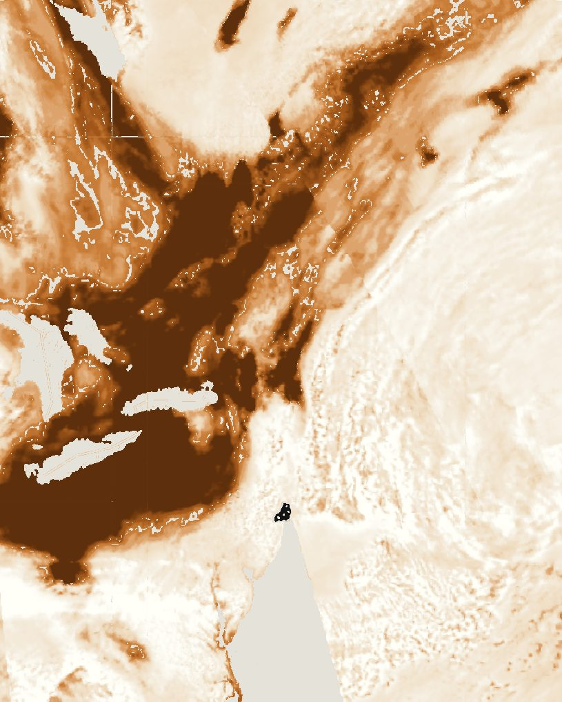
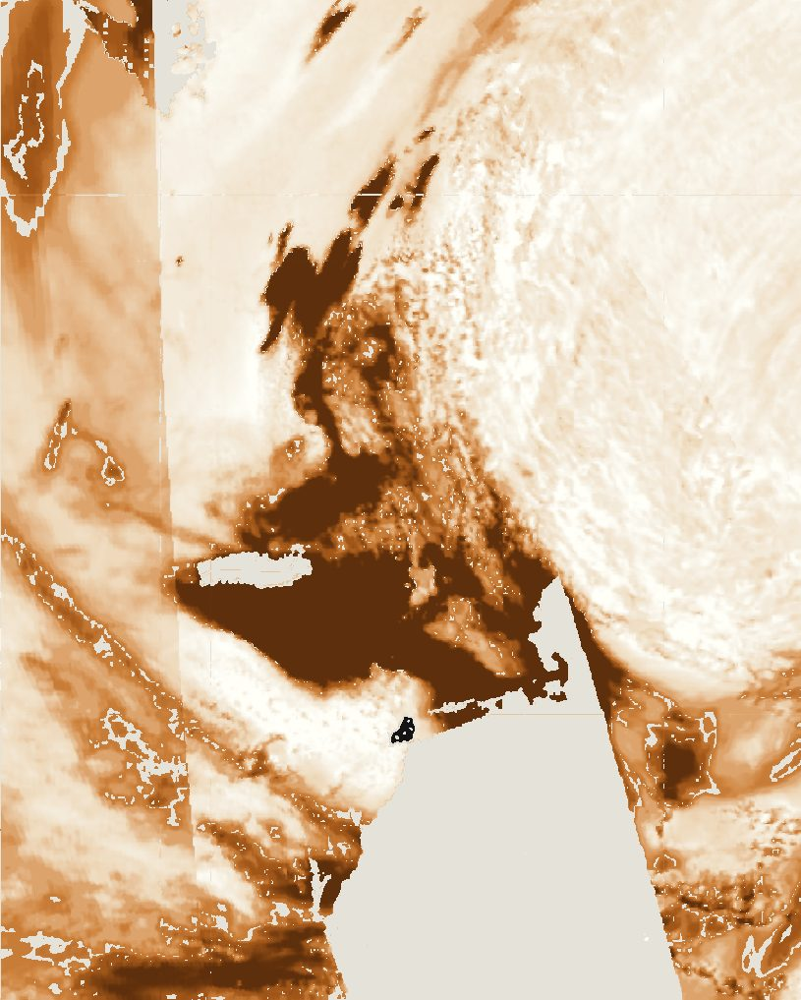
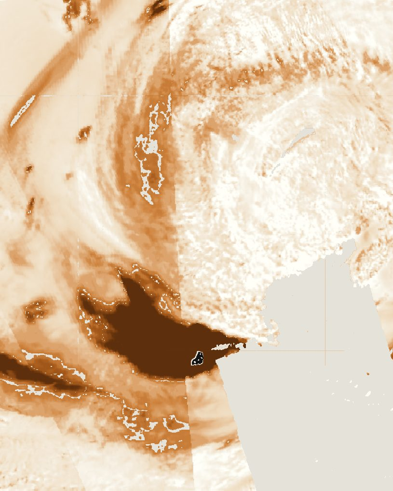
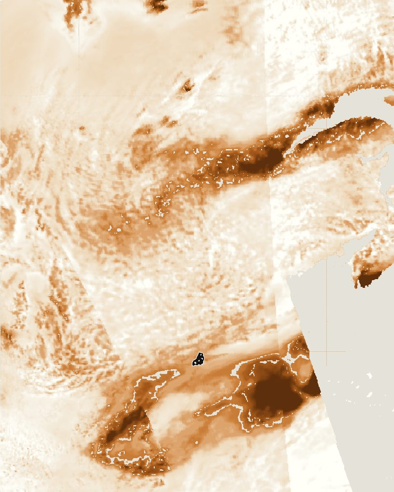
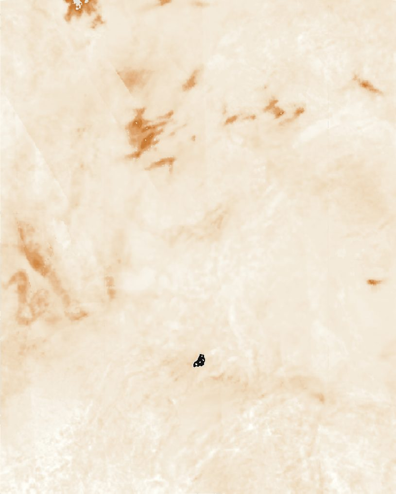
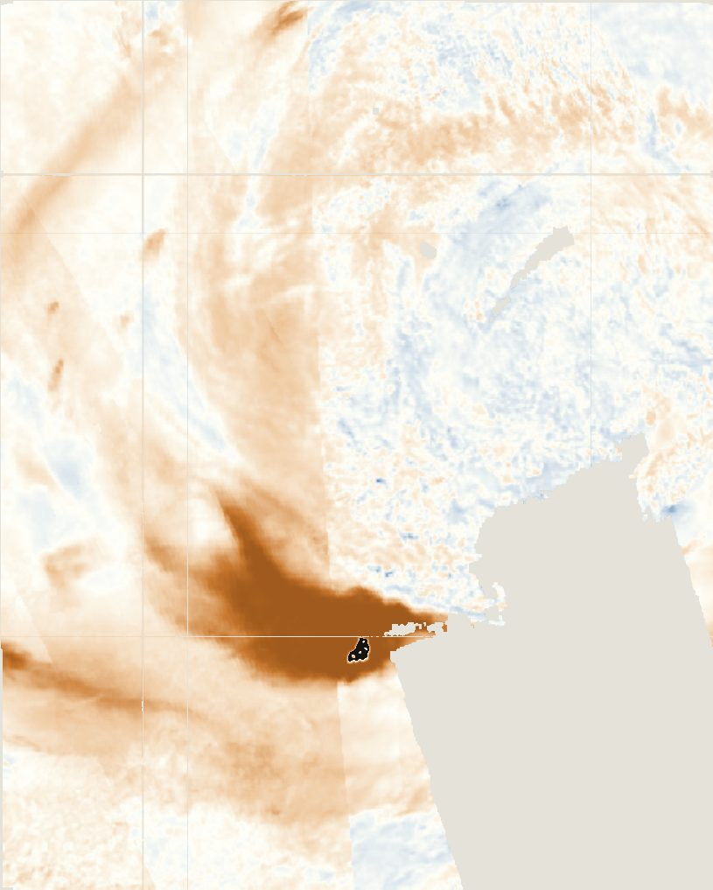
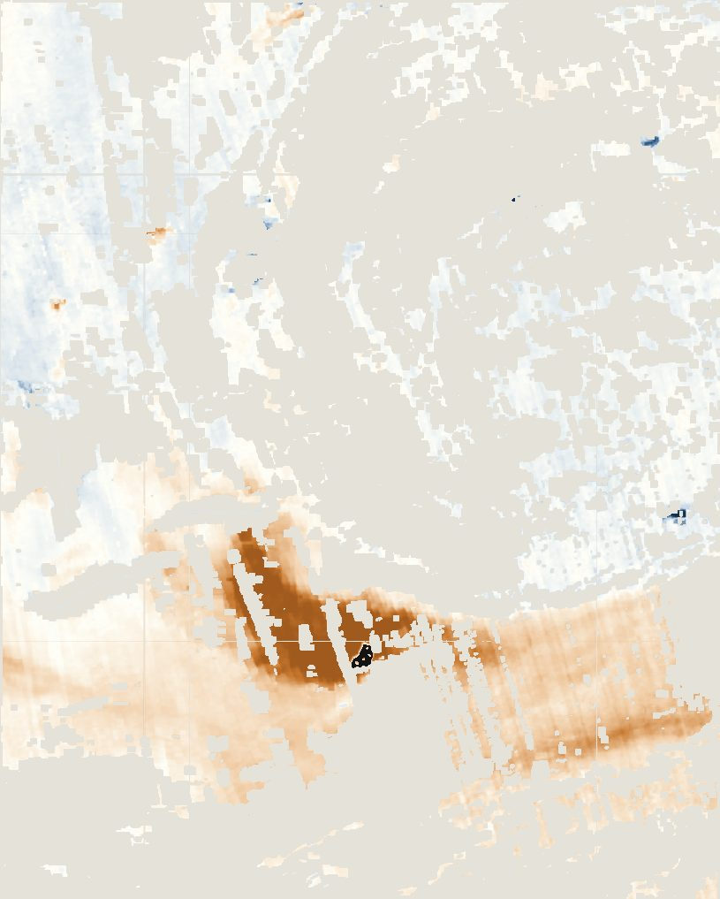

Plate V · Atmospheric remote sensing · June 2023
Smoke from Canada over New York City
A plume that travelled a thousand kilometres in two days, followed from orbit and measured at street level.
- Aerosol index over NYC
- 0.11 → 6.67
- Carbon monoxide
- 4× normal
- Peak daily PM2.5
- 201.7 µg/m³ (Queens)
- City's own NO₂
- 13.2 vs 13.3 ppb
On the afternoon of 7 June 2023, New York's air quality index reached 484, the worst reading officials had recorded since the 1960s. The sky turned orange. The cause was about 1,000 km to the north: wildfires burning in Quebec.
I wanted to trace that smoke from the fires to the city, measure how much it changed the air above New York, and test whether the pollution really came from outside rather than from the city's own traffic. The satellite is Sentinel-5P, whose TROPOMI instrument passes over once a day at about 1:30 pm; the street-level check comes from EPA monitors in the Bronx and Queens.

5 June
6 June
7 June
8 JuneBefore and during
To measure the change, I compared a normal week before the smoke (T1, 30 May to 4 June) with 7 June (T2), the only day the satellite's pass found thick smoke over the city itself. Every city-wide value is the median over the five boroughs.
Over New York, the aerosol index went from 0.11 to 6.67, about sixty times higher. The rise sits in a single band running from Pennsylvania across New Jersey to the city, the same path the smoke followed in the daily maps, while most of the region outside it barely changed.


Carbon monoxide, the fingerprint of fire
Haze alone could be dust or cloud. Burning forests also release carbon monoxide, so if the haze was smoke, CO should rise on the same day along the same path. It did: over the city it went from 41,700 to 169,700 (mol/m² × 10⁶), about four times higher, following the same band out over the Atlantic. In the normal week the highest CO was already over Quebec, where the fires were releasing it before the wind turned south.

Aerosol index
Carbon monoxideThe control, and what people breathed
Nitrogen dioxide comes mainly from the city's own traffic and breaks down within about a day. If the pollution came from outside, NO₂ over the city should have stayed normal. The smoke was so thick on 7 June that the satellite's quality check removed all of its NO₂ data over the city, so this test fell to four EPA ground stations: 13.2 ppb on 7 June against 13.3 ppb in the normal week, well within the usual 5 to 26.
Fine particles told the opposite story. Both PM2.5 stations averaged about 11 µg/m³ in the normal week, then stayed above the EPA's daily limit of 35 for three days running. On 7 June the daily average reached 176.5 in the Bronx and 201.7 in Queens, five to six times the limit, with a worst single hour of 410.
What it adds up to
The daily maps show the plume moving about 1,000 km south and covering the city on 7 June. On that day the satellite saw smoke and carbon monoxide rise sharply over New York, while the city's own traffic pollution, measured on the ground, stayed at its usual level. The particles people breathed reached five to six times the EPA limit. A study in JAMA found asthma emergency-room visits in the city rose by 44% during the smoke.